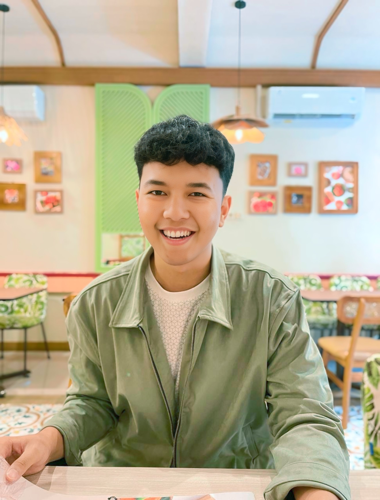

Daftar Riwayat Hidup
Data Pribadi

- Nama Lengkap: Brian Yudha Alfid Prawira
- Tempat / Tanggal Lahir: Surabaya / 31 Mei 2001
- Jenis Kelamin: Pria
- Nomor Telepon: 081252800607
- Email: brianyudha11@gmail.com
Tentang Saya
Saya adalah seorang mahasiswa teknik informatika yang bersemangat di bidang teknologi
dengan rekam jejak dalam membangun proyek kompleks seperti sistem
e-commerce, sistem manajemen bank, sistem manajemen gudang, serta
pengembangan model Machine Learning AI. Saya memiliki motivasi tinggi
untuk terus belajar dan mengimplementasikan solusi yang efisien serta
scalable. Tujuan karir utama saya adalah untuk menjadi seorang Software
Engineer/Developer (Web/Mobile) terkemuka, atau Data Scientist/Analyst
yang dapat memberikan dampak positif melalui data dan perangkat lunak.
Riwayat Pendidikan
- SDN WONOKUSUMO VI / 45 (2007 - 2013)
- SMP NEGERI 1 SURABAYA (2013 - 2016)
- SMA NEGERI 7 SURABAYA (2016 - 2019)
-
INSTITUT TEKHNOLOGI ADHI TAMA SURABAYA (2024 -
sekarang)
Keahlian
-
Hard Skills:
-
Bahasa Pemrograman: C++, Golang, Java, Python,
HTML, CSS, JavaScript
- Basis Data: MySQL
-
Software / Tools Pengembangan: Git, VS Code,
Postman
- Bahasa Asing: Bahasa Inggris
-
Soft Skills:
- Komunikasi yang efektif
- Manajemen Waktu (Time Management) yang disiplin
- Pemecahan Masalah (Problem Solving) dan pemikiran kritis
- Kerja sama tim (Teamwork) serta Kolaborasi
- Kemampuan adaptasi yang cepat terhadap teknologi baru